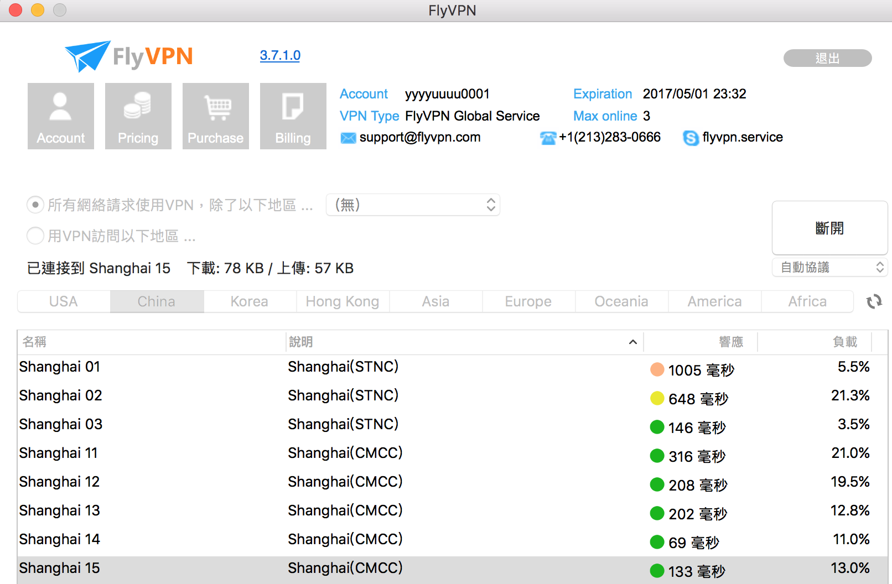

連上VPN後

ping看看egames.jdb168.com1
ping egames.jdb168.com
GG!!ping不到這個網址了1
2
3PING egames.jdb168.com (60.249.58.237): 56 data bytes
Request timeout for icmp_seq 0
Request timeout for icmp_seq 1
我們可以發現該網址的ip是60.249.58.237
所以來加個route table，讓這個ip走我們原本的gateway
首先查一下default gateway是多少1
netstat -rn | head
可以看到default Gateway 是 192.168.133.2541
2
3
4
5
6
7
8
9
10Routing tables
Internet:
Destination Gateway Flags Refs Use Netif Expire
default 192.168.133.254 UGSc 50 0 en0
1 utun1 UGSc 2 0 utun1
2/7 utun1 UGSc 1 0 utun1
4/6 utun1 UGSc 1 0 utun1
8/7 utun1 UGSc 1 0 utun1
10.109.207.1 10.109.207.100 UH 30 1952 utun1
最後一步把這個ip加入route table1
sudo route add 60.249.58.237 192.168.133.254 255.255.255.0
看到這個表示加好了1
add host 60.249.58.237: gateway 192.168.133.254
再ping一次1
ping egames.jdb168.com
非常好！大功告成1
2
3PING egames.jdb168.com (60.249.58.237): 56 data bytes
64 bytes from 60.249.58.237: icmp_seq=0 ttl=59 time=4.022 ms
64 bytes from 60.249.58.237: icmp_seq=1 ttl=59 time=2.813 ms